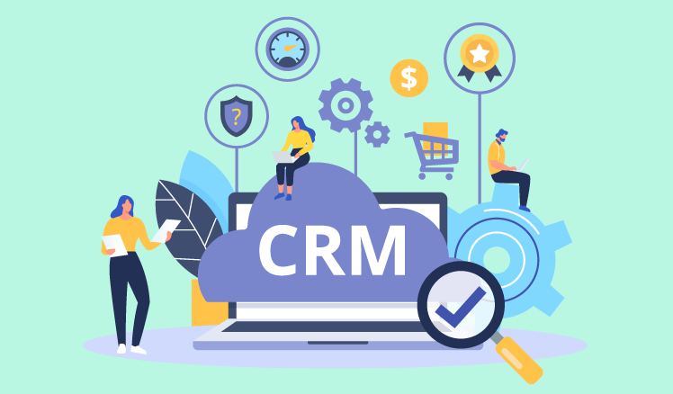

Enterprise Software
What are Enterprise Software Systems?

Enterprise systems handle many operations within a company to facilitate its
business and management reporting tasks. They’re built for speed, scale and
designed to deploy across a variety of networks like the Internet, an intranet
and corporate networks.
Customer relationship management (CRM)
Customer relationship management (CRM) is simply the process of
managing your customer relationships. CRMs allow companies to capture,
centralize, manage, and analyze customer information in real-time while giving
you the ability to automate your sales and marketing efforts.
Why use CRMs?
- It allows you to gain a 360-degree view of your customer.
- It automates time-consuming tasks by reducing mundane or repetitive
manual data entry.
- It helps you manage leads, customers, opportunities, events, cases,
products, and services all in one place.
- It provides you with accurate reporting and analytics to measure the
effectiveness of your marketing and sales efforts.
The
following applications are common amongst companies that handle enterprise
systems:
Email Marketing Systems: Email marketing allows businesses to
promote new products regularly. Companies often employ web analytics to
analyze data that reveals the number of pageviews gained from their
marketing campaigns.
Business Intelligence: Business intelligence is an umbrella
term that includes tools and practices that enable access to information to
optimize work performance.
Payment Processing: Third-party services that process
payments are now faster and diverse due to stronger wireless internet
connections. Services like PayPal and Venmo offer clients more payment
options and flexibility to link various accounts back to their platforms.
Such features make enterprise systems that track financial data adapt to
scalability.
According to a PCMag review [https://www.pcmag.com/roundup/253275/the-best-crm-software],
some examples of the most popular CRM’s used by corporations include:
Salesforce CRM – The
platform works for mid-size companies as well as businesses that aren’t too
familiarized with CRM. Its service model is based on automation by
centralizing leads and customer profile data. This type of enterprise system
falls under the category of general software.
- HubSpot CRM – HubSpot
provides services and tools for marketing and sales companies. Services can
include content management and web analytics. HubSpot falls under the
category of inbound software.
- Zoho CRM – Unlike
HubSpot, this CRM software is aligned with offering project management tools
to companies and employees. Services that this type of social software
offers includes word processing, spreadsheets, and wikis.
- Freshsales CRM –
Freshsales is a cloud-based CRM software that offers industries sales
management, event, and lead tracking services.